Chapter 13 - Relational data
If you’ve ever worked with SQL before, this chapter should be relatively familiar to you. Here we learn about the different ways to work with relational data in R, using dplyr functions. Quoted from the book, the different types of thins you can perform are:
- “Mutating joins, which add new variables to one data frame from matching observations in another.”
- “Filtering joins, which filter observations from one data frame based on whether or not they match an observation in the other table.”
- “Set operations, which treat observations as if they were set elements.”
library("tidyverse")
library("nycflights13")The flights dataset in nycflights13 has tibbles that can be used to practice relational data management:
# the complete flights table
flights## # A tibble: 336,776 x 19
## year month day dep_time sched_dep_time dep_delay arr_time
## <int> <int> <int> <int> <int> <dbl> <int>
## 1 2013 1 1 517 515 2 830
## 2 2013 1 1 533 529 4 850
## 3 2013 1 1 542 540 2 923
## 4 2013 1 1 544 545 -1 1004
## 5 2013 1 1 554 600 -6 812
## 6 2013 1 1 554 558 -4 740
## 7 2013 1 1 555 600 -5 913
## 8 2013 1 1 557 600 -3 709
## 9 2013 1 1 557 600 -3 838
## 10 2013 1 1 558 600 -2 753
## # … with 336,766 more rows, and 12 more variables: sched_arr_time <int>,
## # arr_delay <dbl>, carrier <chr>, flight <int>, tailnum <chr>,
## # origin <chr>, dest <chr>, air_time <dbl>, distance <dbl>, hour <dbl>,
## # minute <dbl>, time_hour <dttm># info on airlines
airlines## # A tibble: 16 x 2
## carrier name
## <chr> <chr>
## 1 9E Endeavor Air Inc.
## 2 AA American Airlines Inc.
## 3 AS Alaska Airlines Inc.
## 4 B6 JetBlue Airways
## 5 DL Delta Air Lines Inc.
## 6 EV ExpressJet Airlines Inc.
## 7 F9 Frontier Airlines Inc.
## 8 FL AirTran Airways Corporation
## 9 HA Hawaiian Airlines Inc.
## 10 MQ Envoy Air
## 11 OO SkyWest Airlines Inc.
## 12 UA United Air Lines Inc.
## 13 US US Airways Inc.
## 14 VX Virgin America
## 15 WN Southwest Airlines Co.
## 16 YV Mesa Airlines Inc.# info on airports
airports## # A tibble: 1,458 x 8
## faa name lat lon alt tz dst tzone
## <chr> <chr> <dbl> <dbl> <int> <dbl> <chr> <chr>
## 1 04G Lansdowne Airport 41.1 -80.6 1044 -5 A America/New_…
## 2 06A Moton Field Municipa… 32.5 -85.7 264 -6 A America/Chic…
## 3 06C Schaumburg Regional 42.0 -88.1 801 -6 A America/Chic…
## 4 06N Randall Airport 41.4 -74.4 523 -5 A America/New_…
## 5 09J Jekyll Island Airport 31.1 -81.4 11 -5 A America/New_…
## 6 0A9 Elizabethton Municip… 36.4 -82.2 1593 -5 A America/New_…
## 7 0G6 Williams County Airp… 41.5 -84.5 730 -5 A America/New_…
## 8 0G7 Finger Lakes Regiona… 42.9 -76.8 492 -5 A America/New_…
## 9 0P2 Shoestring Aviation … 39.8 -76.6 1000 -5 U America/New_…
## 10 0S9 Jefferson County Intl 48.1 -123. 108 -8 A America/Los_…
## # … with 1,448 more rows# info on individual planes
planes## # A tibble: 3,322 x 9
## tailnum year type manufacturer model engines seats speed engine
## <chr> <int> <chr> <chr> <chr> <int> <int> <int> <chr>
## 1 N10156 2004 Fixed win… EMBRAER EMB-1… 2 55 NA Turbo…
## 2 N102UW 1998 Fixed win… AIRBUS INDUS… A320-… 2 182 NA Turbo…
## 3 N103US 1999 Fixed win… AIRBUS INDUS… A320-… 2 182 NA Turbo…
## 4 N104UW 1999 Fixed win… AIRBUS INDUS… A320-… 2 182 NA Turbo…
## 5 N10575 2002 Fixed win… EMBRAER EMB-1… 2 55 NA Turbo…
## 6 N105UW 1999 Fixed win… AIRBUS INDUS… A320-… 2 182 NA Turbo…
## 7 N107US 1999 Fixed win… AIRBUS INDUS… A320-… 2 182 NA Turbo…
## 8 N108UW 1999 Fixed win… AIRBUS INDUS… A320-… 2 182 NA Turbo…
## 9 N109UW 1999 Fixed win… AIRBUS INDUS… A320-… 2 182 NA Turbo…
## 10 N110UW 1999 Fixed win… AIRBUS INDUS… A320-… 2 182 NA Turbo…
## # … with 3,312 more rows# weater information
weather## # A tibble: 26,115 x 15
## origin year month day hour temp dewp humid wind_dir wind_speed
## <chr> <dbl> <dbl> <int> <int> <dbl> <dbl> <dbl> <dbl> <dbl>
## 1 EWR 2013 1 1 1 39.0 26.1 59.4 270 10.4
## 2 EWR 2013 1 1 2 39.0 27.0 61.6 250 8.06
## 3 EWR 2013 1 1 3 39.0 28.0 64.4 240 11.5
## 4 EWR 2013 1 1 4 39.9 28.0 62.2 250 12.7
## 5 EWR 2013 1 1 5 39.0 28.0 64.4 260 12.7
## 6 EWR 2013 1 1 6 37.9 28.0 67.2 240 11.5
## 7 EWR 2013 1 1 7 39.0 28.0 64.4 240 15.0
## 8 EWR 2013 1 1 8 39.9 28.0 62.2 250 10.4
## 9 EWR 2013 1 1 9 39.9 28.0 62.2 260 15.0
## 10 EWR 2013 1 1 10 41 28.0 59.6 260 13.8
## # … with 26,105 more rows, and 5 more variables: wind_gust <dbl>,
## # precip <dbl>, pressure <dbl>, visib <dbl>, time_hour <dttm>- flights connects to planes via a single variable, tailnum.
- flights connects to airlines through the carrier variable.
- flights connects to airports in two ways: via the origin and dest variables.
- flights connects to weather via origin (the location), and year, month, day and hour (the time).
13.2.1 Exercises
1. Imagine you wanted to draw (approximately) the route each plane flies from its origin to its destination. What variables would you need? What tables would you need to combine?
You would need the variables tailnum, which defines individual planes, and the latitude and longitude values of the origin and destination variables. To do this, you can combine the flights table, which connects tailnum to origin and destination, with the airports table, which contains the latitude and longitude of each airport. Here is the join that can be performed:
flights_1 <- left_join(flights, airports, by = c("dest" = "faa"))
flights_2 <- left_join(flights_1, airports, by = c("origin" = "faa"))
flights_2## # A tibble: 336,776 x 33
## year month day dep_time sched_dep_time dep_delay arr_time
## <int> <int> <int> <int> <int> <dbl> <int>
## 1 2013 1 1 517 515 2 830
## 2 2013 1 1 533 529 4 850
## 3 2013 1 1 542 540 2 923
## 4 2013 1 1 544 545 -1 1004
## 5 2013 1 1 554 600 -6 812
## 6 2013 1 1 554 558 -4 740
## 7 2013 1 1 555 600 -5 913
## 8 2013 1 1 557 600 -3 709
## 9 2013 1 1 557 600 -3 838
## 10 2013 1 1 558 600 -2 753
## # … with 336,766 more rows, and 26 more variables: sched_arr_time <int>,
## # arr_delay <dbl>, carrier <chr>, flight <int>, tailnum <chr>,
## # origin <chr>, dest <chr>, air_time <dbl>, distance <dbl>, hour <dbl>,
## # minute <dbl>, time_hour <dttm>, name.x <chr>, lat.x <dbl>,
## # lon.x <dbl>, alt.x <int>, tz.x <dbl>, dst.x <chr>, tzone.x <chr>,
## # name.y <chr>, lat.y <dbl>, lon.y <dbl>, alt.y <int>, tz.y <dbl>,
## # dst.y <chr>, tzone.y <chr>2. I forgot to draw the relationship between weather and airports. What is the relationship and how should it appear in the diagram?
The airports table can be joined to the weather table, in which the primary key is origin in the weather table and the foreign key is the faa column in the airports table. For each observation in weather, information about the airport can be appended as a new column. For example:
weather_airports <- left_join(weather, airports, by = c("origin" = "faa"))
weather_airports## # A tibble: 26,115 x 22
## origin year month day hour temp dewp humid wind_dir wind_speed
## <chr> <dbl> <dbl> <int> <int> <dbl> <dbl> <dbl> <dbl> <dbl>
## 1 EWR 2013 1 1 1 39.0 26.1 59.4 270 10.4
## 2 EWR 2013 1 1 2 39.0 27.0 61.6 250 8.06
## 3 EWR 2013 1 1 3 39.0 28.0 64.4 240 11.5
## 4 EWR 2013 1 1 4 39.9 28.0 62.2 250 12.7
## 5 EWR 2013 1 1 5 39.0 28.0 64.4 260 12.7
## 6 EWR 2013 1 1 6 37.9 28.0 67.2 240 11.5
## 7 EWR 2013 1 1 7 39.0 28.0 64.4 240 15.0
## 8 EWR 2013 1 1 8 39.9 28.0 62.2 250 10.4
## 9 EWR 2013 1 1 9 39.9 28.0 62.2 260 15.0
## 10 EWR 2013 1 1 10 41 28.0 59.6 260 13.8
## # … with 26,105 more rows, and 12 more variables: wind_gust <dbl>,
## # precip <dbl>, pressure <dbl>, visib <dbl>, time_hour <dttm>,
## # name <chr>, lat <dbl>, lon <dbl>, alt <int>, tz <dbl>, dst <chr>,
## # tzone <chr>3. weather only contains information for the origin (NYC) airports. If it contained weather records for all airports in the USA, what additional relation would it define with flights?
If it contained weather records for all airports, it could be joined with flights using the primary key consisting of the columns year, month, day, hour and origin in weather, which could be connected with the foreign key year, month, day, hour, and either origin or dest in flights.
4. We know that some days of the year are “special”, and fewer people than usual fly on them. How might you represent that data as a data frame? What would be the primary keys of that table? How would it connect to the existing tables?
You could have a separate data frame containing the variables month, day, and “special”, in which the “special” days would be designated TRUE. This could be connected to the existing tables using the primary key consisting of month, and day (should probably include the year as well, depending on the holiday). The value for the “special” column would be appended to the corresponding foriegn key values as TRUE or FALSE. For example, below is a table containing some special days of the year (Christmas, New Years), that is joined to the flights table.
special <- tribble (
~month, ~day, ~event,
12, 25, TRUE,
1, 1, TRUE
)
left_join(flights, special) %>%
select (year, month, day, flight, event) %>%
mutate ( event = (!is.na(event)))## Joining, by = c("month", "day")## # A tibble: 336,776 x 5
## year month day flight event
## <int> <dbl> <dbl> <int> <lgl>
## 1 2013 1 1 1545 TRUE
## 2 2013 1 1 1714 TRUE
## 3 2013 1 1 1141 TRUE
## 4 2013 1 1 725 TRUE
## 5 2013 1 1 461 TRUE
## 6 2013 1 1 1696 TRUE
## 7 2013 1 1 507 TRUE
## 8 2013 1 1 5708 TRUE
## 9 2013 1 1 79 TRUE
## 10 2013 1 1 301 TRUE
## # … with 336,766 more rows13.3 Notes - Keys
A key is a value or combination of values that uniquely identifies an observation. From the book,
- “A primary key uniquely identifies an observation in its own table. For example, planes$tailnum is a primary key because it uniquely identifies each plane in the planes table.”
- “A foreign key uniquely identifies an observation in another table. For example, the flights$tailnum is a foreign key because it appears in the flights table where it matches each flight to a unique plane.”
You can verify that a variable can serve as a primary key by verifying that they do uniquely identify each observation. The book uses a combination of count() and filter(). If there are any values with count > 1, the variable is not a primary key.
planes %>%
count(tailnum) %>%
filter(n > 1)## # A tibble: 0 x 2
## # … with 2 variables: tailnum <chr>, n <int>weather %>%
count(year, month, day, hour, origin) %>%
filter(n > 1)## # A tibble: 3 x 6
## year month day hour origin n
## <dbl> <dbl> <int> <int> <chr> <int>
## 1 2013 11 3 1 EWR 2
## 2 2013 11 3 1 JFK 2
## 3 2013 11 3 1 LGA 2If there are no variables in the dataset that can serve as primary keys, we can create a primary key with mutate() and row_number(). This is called a surrogate key.
# combination of year, month, day, flight is not adequate as a primary key.
# A surrogate key must be added. See 13.3.1 exercises for an example of adding a surrogate key.
flights %>%
count(year, month, day, flight) %>%
filter(n > 1)## # A tibble: 29,768 x 5
## year month day flight n
## <int> <int> <int> <int> <int>
## 1 2013 1 1 1 2
## 2 2013 1 1 3 2
## 3 2013 1 1 4 2
## 4 2013 1 1 11 3
## 5 2013 1 1 15 2
## 6 2013 1 1 21 2
## 7 2013 1 1 27 4
## 8 2013 1 1 31 2
## 9 2013 1 1 32 2
## 10 2013 1 1 35 2
## # … with 29,758 more rowsHow a primary key from one table matches a foreign key in another table is what is called the relation. Depending on how they match, we can perform joins or other set operations, based on the values present in both keys.
13.3.1 Exercises
1. Add a surrogate key to flights.
# add a surrogate key to flights, display vs flight
flights %>%
transmute (flight, surrogate_key = row_number() )## # A tibble: 336,776 x 2
## flight surrogate_key
## <int> <int>
## 1 1545 1
## 2 1714 2
## 3 1141 3
## 4 725 4
## 5 461 5
## 6 1696 6
## 7 507 7
## 8 5708 8
## 9 79 9
## 10 301 10
## # … with 336,766 more rows2. Identify the keys in the following datasets:
We can determine the primary keys by looking for unique groupings of variables that match the total number of observations in each table using group_by() and count(), and piping the ouput either to nrow() or filtering for groups that have n>1. If nrow() is equal to the total observations, or if filter(n>1) yields zero observations, then we have found the primary key.
The primary key for Lahman::Batting is the combination of playerID, yearID, and stint. The primary key for babynames::babynames is year, sex, and name. The primary key for nasaweather::atmos is lat, long, year, and month. The primary key for fueleconomy::vehicles is id. For ggplot2::diamonds, there is no primary key. We can generate a surrogate key using mutate() and row_number().
head(Lahman::Batting)## playerID yearID stint teamID lgID G AB R H X2B X3B HR RBI SB CS BB
## 1 abercda01 1871 1 TRO NA 1 4 0 0 0 0 0 0 0 0 0
## 2 addybo01 1871 1 RC1 NA 25 118 30 32 6 0 0 13 8 1 4
## 3 allisar01 1871 1 CL1 NA 29 137 28 40 4 5 0 19 3 1 2
## 4 allisdo01 1871 1 WS3 NA 27 133 28 44 10 2 2 27 1 1 0
## 5 ansonca01 1871 1 RC1 NA 25 120 29 39 11 3 0 16 6 2 2
## 6 armstbo01 1871 1 FW1 NA 12 49 9 11 2 1 0 5 0 1 0
## SO IBB HBP SH SF GIDP
## 1 0 NA NA NA NA NA
## 2 0 NA NA NA NA NA
## 3 5 NA NA NA NA NA
## 4 2 NA NA NA NA NA
## 5 1 NA NA NA NA NA
## 6 1 NA NA NA NA NA# method 1
dim(Lahman::Batting)## [1] 102816 22group_by(Lahman::Batting, playerID, yearID,stint) %>%
count() %>%
nrow()## [1] 102816# method 2
group_by(Lahman::Batting, playerID, yearID,stint) %>%
count() %>%
nrow()## [1] 102816babynames::babynames## # A tibble: 1,924,665 x 5
## year sex name n prop
## <dbl> <chr> <chr> <int> <dbl>
## 1 1880 F Mary 7065 0.0724
## 2 1880 F Anna 2604 0.0267
## 3 1880 F Emma 2003 0.0205
## 4 1880 F Elizabeth 1939 0.0199
## 5 1880 F Minnie 1746 0.0179
## 6 1880 F Margaret 1578 0.0162
## 7 1880 F Ida 1472 0.0151
## 8 1880 F Alice 1414 0.0145
## 9 1880 F Bertha 1320 0.0135
## 10 1880 F Sarah 1288 0.0132
## # … with 1,924,655 more rowsdim(babynames::babynames)## [1] 1924665 5group_by(babynames::babynames, year, sex,name) %>%
count() %>%
nrow()## [1] 1924665nasaweather::atmos## # A tibble: 41,472 x 11
## lat long year month surftemp temp pressure ozone cloudlow cloudmid
## <dbl> <dbl> <int> <int> <dbl> <dbl> <dbl> <dbl> <dbl> <dbl>
## 1 36.2 -114. 1995 1 273. 272. 835 304 7.5 34.5
## 2 33.7 -114. 1995 1 280. 282. 940 304 11.5 32.5
## 3 31.2 -114. 1995 1 285. 285. 960 298 16.5 26
## 4 28.7 -114. 1995 1 289. 291. 990 276 20.5 14.5
## 5 26.2 -114. 1995 1 292. 293. 1000 274 26 10.5
## 6 23.7 -114. 1995 1 294. 294. 1000 264 30 9.5
## 7 21.2 -114. 1995 1 295 295. 1000 258 29.5 11
## 8 18.7 -114. 1995 1 298. 297. 1000 252 26.5 17.5
## 9 16.2 -114. 1995 1 300. 298. 1000 250 27.5 18.5
## 10 13.7 -114. 1995 1 300. 299. 1000 250 26 16.5
## # … with 41,462 more rows, and 1 more variable: cloudhigh <dbl>dim(nasaweather::atmos)## [1] 41472 11group_by(nasaweather::atmos, lat, long, year, month) %>%
count() %>%
nrow()## [1] 41472fueleconomy::vehicles## # A tibble: 33,442 x 12
## id make model year class trans drive cyl displ fuel hwy cty
## <int> <chr> <chr> <int> <chr> <chr> <chr> <int> <dbl> <chr> <int> <int>
## 1 27550 AM Ge… DJ P… 1984 Spec… Auto… 2-Wh… 4 2.5 Regu… 17 18
## 2 28426 AM Ge… DJ P… 1984 Spec… Auto… 2-Wh… 4 2.5 Regu… 17 18
## 3 27549 AM Ge… FJ8c… 1984 Spec… Auto… 2-Wh… 6 4.2 Regu… 13 13
## 4 28425 AM Ge… FJ8c… 1984 Spec… Auto… 2-Wh… 6 4.2 Regu… 13 13
## 5 1032 AM Ge… Post… 1985 Spec… Auto… Rear… 4 2.5 Regu… 17 16
## 6 1033 AM Ge… Post… 1985 Spec… Auto… Rear… 6 4.2 Regu… 13 13
## 7 3347 ASC I… GNX 1987 Mids… Auto… Rear… 6 3.8 Prem… 21 14
## 8 13309 Acura 2.2C… 1997 Subc… Auto… Fron… 4 2.2 Regu… 26 20
## 9 13310 Acura 2.2C… 1997 Subc… Manu… Fron… 4 2.2 Regu… 28 22
## 10 13311 Acura 2.2C… 1997 Subc… Auto… Fron… 6 3 Regu… 26 18
## # … with 33,432 more rowsdim(fueleconomy::vehicles)## [1] 33442 12group_by(fueleconomy::vehicles, id) %>%
count() %>%
nrow()## [1] 33442ggplot2::diamonds## # A tibble: 53,940 x 10
## carat cut color clarity depth table price x y z
## <dbl> <ord> <ord> <ord> <dbl> <dbl> <int> <dbl> <dbl> <dbl>
## 1 0.23 Ideal E SI2 61.5 55 326 3.95 3.98 2.43
## 2 0.21 Premium E SI1 59.8 61 326 3.89 3.84 2.31
## 3 0.23 Good E VS1 56.9 65 327 4.05 4.07 2.31
## 4 0.290 Premium I VS2 62.4 58 334 4.2 4.23 2.63
## 5 0.31 Good J SI2 63.3 58 335 4.34 4.35 2.75
## 6 0.24 Very Good J VVS2 62.8 57 336 3.94 3.96 2.48
## 7 0.24 Very Good I VVS1 62.3 57 336 3.95 3.98 2.47
## 8 0.26 Very Good H SI1 61.9 55 337 4.07 4.11 2.53
## 9 0.22 Fair E VS2 65.1 61 337 3.87 3.78 2.49
## 10 0.23 Very Good H VS1 59.4 61 338 4 4.05 2.39
## # … with 53,930 more rowsdiamonds_withkey <- ggplot2::diamonds %>%
mutate (surrogate_key = row_number())
diamonds_withkey## # A tibble: 53,940 x 11
## carat cut color clarity depth table price x y z
## <dbl> <ord> <ord> <ord> <dbl> <dbl> <int> <dbl> <dbl> <dbl>
## 1 0.23 Ideal E SI2 61.5 55 326 3.95 3.98 2.43
## 2 0.21 Prem… E SI1 59.8 61 326 3.89 3.84 2.31
## 3 0.23 Good E VS1 56.9 65 327 4.05 4.07 2.31
## 4 0.290 Prem… I VS2 62.4 58 334 4.2 4.23 2.63
## 5 0.31 Good J SI2 63.3 58 335 4.34 4.35 2.75
## 6 0.24 Very… J VVS2 62.8 57 336 3.94 3.96 2.48
## 7 0.24 Very… I VVS1 62.3 57 336 3.95 3.98 2.47
## 8 0.26 Very… H SI1 61.9 55 337 4.07 4.11 2.53
## 9 0.22 Fair E VS2 65.1 61 337 3.87 3.78 2.49
## 10 0.23 Very… H VS1 59.4 61 338 4 4.05 2.39
## # … with 53,930 more rows, and 1 more variable: surrogate_key <int>3. Draw a diagram illustrating the connections between the Batting, Master, and Salaries tables in the Lahman package. Draw another diagram that shows the relationship between Master, Managers, AwardsManagers. How would you characterise the relationship between the Batting, Pitching, and Fielding tables?
- Batting connects to Master using playerID, and with Salaries through playerID, yearID, teamID, and lgID. Master connects with Salaries through playerID.
- Master connects with Managers and with AwardsManagers through playerID. Managers connects with AwardsManagers using playerID, year, and lgID.
- Batting, Pitching, and Fielding all connect with each other through playerID, yearID, stint, teamID, and lgID. They are just variables for this key categorized into different tables based on the type of play. You could also just use playerID, yearID, and stint to get a unique key for these tables.
library(Lahman)
as_tibble(Batting)## # A tibble: 102,816 x 22
## playerID yearID stint teamID lgID G AB R H X2B X3B
## <chr> <int> <int> <fct> <fct> <int> <int> <int> <int> <int> <int>
## 1 abercda… 1871 1 TRO NA 1 4 0 0 0 0
## 2 addybo01 1871 1 RC1 NA 25 118 30 32 6 0
## 3 allisar… 1871 1 CL1 NA 29 137 28 40 4 5
## 4 allisdo… 1871 1 WS3 NA 27 133 28 44 10 2
## 5 ansonca… 1871 1 RC1 NA 25 120 29 39 11 3
## 6 armstbo… 1871 1 FW1 NA 12 49 9 11 2 1
## 7 barkeal… 1871 1 RC1 NA 1 4 0 1 0 0
## 8 barnero… 1871 1 BS1 NA 31 157 66 63 10 9
## 9 barrebi… 1871 1 FW1 NA 1 5 1 1 1 0
## 10 barrofr… 1871 1 BS1 NA 18 86 13 13 2 1
## # … with 102,806 more rows, and 11 more variables: HR <int>, RBI <int>,
## # SB <int>, CS <int>, BB <int>, SO <int>, IBB <int>, HBP <int>,
## # SH <int>, SF <int>, GIDP <int>as_tibble(Master)## # A tibble: 19,105 x 26
## playerID birthYear birthMonth birthDay birthCountry birthState birthCity
## <chr> <int> <int> <int> <chr> <chr> <chr>
## 1 aardsda… 1981 12 27 USA CO Denver
## 2 aaronha… 1934 2 5 USA AL Mobile
## 3 aaronto… 1939 8 5 USA AL Mobile
## 4 aasedo01 1954 9 8 USA CA Orange
## 5 abadan01 1972 8 25 USA FL Palm Bea…
## 6 abadfe01 1985 12 17 D.R. La Romana La Romana
## 7 abadijo… 1850 11 4 USA PA Philadel…
## 8 abbated… 1877 4 15 USA PA Latrobe
## 9 abbeybe… 1869 11 11 USA VT Essex
## 10 abbeych… 1866 10 14 USA NE Falls Ci…
## # … with 19,095 more rows, and 19 more variables: deathYear <int>,
## # deathMonth <int>, deathDay <int>, deathCountry <chr>,
## # deathState <chr>, deathCity <chr>, nameFirst <chr>, nameLast <chr>,
## # nameGiven <chr>, weight <int>, height <int>, bats <fct>, throws <fct>,
## # debut <chr>, finalGame <chr>, retroID <chr>, bbrefID <chr>,
## # deathDate <date>, birthDate <date>as_tibble(Salaries)## # A tibble: 26,428 x 5
## yearID teamID lgID playerID salary
## <int> <fct> <fct> <chr> <int>
## 1 1985 ATL NL barkele01 870000
## 2 1985 ATL NL bedrost01 550000
## 3 1985 ATL NL benedbr01 545000
## 4 1985 ATL NL campri01 633333
## 5 1985 ATL NL ceronri01 625000
## 6 1985 ATL NL chambch01 800000
## 7 1985 ATL NL dedmoje01 150000
## 8 1985 ATL NL forstte01 483333
## 9 1985 ATL NL garbege01 772000
## 10 1985 ATL NL harpete01 250000
## # … with 26,418 more rowsas_tibble(Managers)## # A tibble: 3,436 x 10
## playerID yearID teamID lgID inseason G W L rank plyrMgr
## <chr> <int> <fct> <fct> <int> <int> <int> <int> <int> <fct>
## 1 wrighha01 1871 BS1 NA 1 31 20 10 3 Y
## 2 woodji01 1871 CH1 NA 1 28 19 9 2 Y
## 3 paborch01 1871 CL1 NA 1 29 10 19 8 Y
## 4 lennobi01 1871 FW1 NA 1 14 5 9 8 Y
## 5 deaneha01 1871 FW1 NA 2 5 2 3 8 Y
## 6 fergubo01 1871 NY2 NA 1 33 16 17 5 Y
## 7 mcbridi01 1871 PH1 NA 1 28 21 7 1 Y
## 8 hastisc01 1871 RC1 NA 1 25 4 21 9 Y
## 9 pikeli01 1871 TRO NA 1 4 1 3 6 Y
## 10 cravebi01 1871 TRO NA 2 25 12 12 6 Y
## # … with 3,426 more rowsas_tibble(AwardsManagers)## # A tibble: 179 x 6
## playerID awardID yearID lgID tie notes
## <chr> <chr> <int> <fct> <chr> <lgl>
## 1 larusto01 BBWAA Manager of the Year 1983 AL <NA> NA
## 2 lasorto01 BBWAA Manager of the Year 1983 NL <NA> NA
## 3 andersp01 BBWAA Manager of the Year 1984 AL <NA> NA
## 4 freyji99 BBWAA Manager of the Year 1984 NL <NA> NA
## 5 coxbo01 BBWAA Manager of the Year 1985 AL <NA> NA
## 6 herzowh01 BBWAA Manager of the Year 1985 NL <NA> NA
## 7 mcnamjo99 BBWAA Manager of the Year 1986 AL <NA> NA
## 8 lanieha01 BBWAA Manager of the Year 1986 NL <NA> NA
## 9 andersp01 BBWAA Manager of the Year 1987 AL <NA> NA
## 10 rodgebu01 BBWAA Manager of the Year 1987 NL <NA> NA
## # … with 169 more rowsas_tibble(Pitching)## # A tibble: 44,963 x 30
## playerID yearID stint teamID lgID W L G GS CG SHO
## <chr> <int> <int> <fct> <fct> <int> <int> <int> <int> <int> <int>
## 1 bechtge… 1871 1 PH1 NA 1 2 3 3 2 0
## 2 brainas… 1871 1 WS3 NA 12 15 30 30 30 0
## 3 fergubo… 1871 1 NY2 NA 0 0 1 0 0 0
## 4 fishech… 1871 1 RC1 NA 4 16 24 24 22 1
## 5 fleetfr… 1871 1 NY2 NA 0 1 1 1 1 0
## 6 flowedi… 1871 1 TRO NA 0 0 1 0 0 0
## 7 mackde01 1871 1 RC1 NA 0 1 3 1 1 0
## 8 mathebo… 1871 1 FW1 NA 6 11 19 19 19 1
## 9 mcbridi… 1871 1 PH1 NA 18 5 25 25 25 0
## 10 mcmuljo… 1871 1 TRO NA 12 15 29 29 28 0
## # … with 44,953 more rows, and 19 more variables: SV <int>, IPouts <int>,
## # H <int>, ER <int>, HR <int>, BB <int>, SO <int>, BAOpp <dbl>,
## # ERA <dbl>, IBB <int>, WP <int>, HBP <int>, BK <int>, BFP <int>,
## # GF <int>, R <int>, SH <int>, SF <int>, GIDP <int>as_tibble(Fielding)## # A tibble: 136,815 x 18
## playerID yearID stint teamID lgID POS G GS InnOuts PO A
## <chr> <int> <int> <fct> <fct> <chr> <int> <int> <int> <int> <int>
## 1 abercda… 1871 1 TRO NA SS 1 NA NA 1 3
## 2 addybo01 1871 1 RC1 NA 2B 22 NA NA 67 72
## 3 addybo01 1871 1 RC1 NA SS 3 NA NA 8 14
## 4 allisar… 1871 1 CL1 NA 2B 2 NA NA 1 4
## 5 allisar… 1871 1 CL1 NA OF 29 NA NA 51 3
## 6 allisdo… 1871 1 WS3 NA C 27 NA NA 68 15
## 7 ansonca… 1871 1 RC1 NA 1B 1 NA NA 7 0
## 8 ansonca… 1871 1 RC1 NA 2B 2 NA NA 3 4
## 9 ansonca… 1871 1 RC1 NA 3B 20 NA NA 38 52
## 10 ansonca… 1871 1 RC1 NA C 5 NA NA 10 0
## # … with 136,805 more rows, and 7 more variables: E <int>, DP <int>,
## # PB <int>, WP <int>, SB <int>, CS <int>, ZR <int>Batting %>%
group_by(playerID, yearID, stint) %>%
count() %>%
filter(n>1)## # A tibble: 0 x 4
## # Groups: playerID, yearID, stint [0]
## # … with 4 variables: playerID <chr>, yearID <int>, stint <int>, n <int>13.4 Notes - Mutating Joins
This section on mutating joins introduces the usage of the join functions and provides examples of how they could be used. Below are the provided examples.
# make a truncated dataset to work with
flights2 <- flights %>%
select(year:day, hour, origin, dest, tailnum, carrier)
flights2## # A tibble: 336,776 x 8
## year month day hour origin dest tailnum carrier
## <int> <int> <int> <dbl> <chr> <chr> <chr> <chr>
## 1 2013 1 1 5 EWR IAH N14228 UA
## 2 2013 1 1 5 LGA IAH N24211 UA
## 3 2013 1 1 5 JFK MIA N619AA AA
## 4 2013 1 1 5 JFK BQN N804JB B6
## 5 2013 1 1 6 LGA ATL N668DN DL
## 6 2013 1 1 5 EWR ORD N39463 UA
## 7 2013 1 1 6 EWR FLL N516JB B6
## 8 2013 1 1 6 LGA IAD N829AS EV
## 9 2013 1 1 6 JFK MCO N593JB B6
## 10 2013 1 1 6 LGA ORD N3ALAA AA
## # … with 336,766 more rowsComparing how to perform joins using dplyr or baseR:
# left join using left_join() from dplyr
flights2 %>%
select(-origin, -dest) %>%
left_join(airlines, by = "carrier")## # A tibble: 336,776 x 7
## year month day hour tailnum carrier name
## <int> <int> <int> <dbl> <chr> <chr> <chr>
## 1 2013 1 1 5 N14228 UA United Air Lines Inc.
## 2 2013 1 1 5 N24211 UA United Air Lines Inc.
## 3 2013 1 1 5 N619AA AA American Airlines Inc.
## 4 2013 1 1 5 N804JB B6 JetBlue Airways
## 5 2013 1 1 6 N668DN DL Delta Air Lines Inc.
## 6 2013 1 1 5 N39463 UA United Air Lines Inc.
## 7 2013 1 1 6 N516JB B6 JetBlue Airways
## 8 2013 1 1 6 N829AS EV ExpressJet Airlines Inc.
## 9 2013 1 1 6 N593JB B6 JetBlue Airways
## 10 2013 1 1 6 N3ALAA AA American Airlines Inc.
## # … with 336,766 more rows# left join using base R commands and mutate()
flights2 %>%
select(-origin, -dest) %>%
mutate(name = airlines$name[match(carrier, airlines$carrier)])## # A tibble: 336,776 x 7
## year month day hour tailnum carrier name
## <int> <int> <int> <dbl> <chr> <chr> <chr>
## 1 2013 1 1 5 N14228 UA United Air Lines Inc.
## 2 2013 1 1 5 N24211 UA United Air Lines Inc.
## 3 2013 1 1 5 N619AA AA American Airlines Inc.
## 4 2013 1 1 5 N804JB B6 JetBlue Airways
## 5 2013 1 1 6 N668DN DL Delta Air Lines Inc.
## 6 2013 1 1 5 N39463 UA United Air Lines Inc.
## 7 2013 1 1 6 N516JB B6 JetBlue Airways
## 8 2013 1 1 6 N829AS EV ExpressJet Airlines Inc.
## 9 2013 1 1 6 N593JB B6 JetBlue Airways
## 10 2013 1 1 6 N3ALAA AA American Airlines Inc.
## # … with 336,766 more rowsThere are two classes of joins: inner joins, in which only observations with common key values are provided in the joined output, or outer joins, in which all observations from one or more of the tables are kept, in the joined output, and the rest of the missing values are filled in with NA.
From the text, the types of outer joins are defined as:
- “A left join keeps all observations in x.”
- “A right join keeps all observations in y.”
- “A full join keeps all observations in x and y.”
These joins can be performed using dplyr commands (left_join(), right_join(), full_join(), inner_join(), semi_join(), anti_join()) or using the base R command merge(). The “by” argument is important to modify depending on the type of join you want to perform and the keys you want to use between the two tables. The book provides the examples below on the different ways the “by” argument can be used.
# left join, if "by" argument is unspecified, will perform natural join
flights2 %>%
left_join(weather)## Joining, by = c("year", "month", "day", "hour", "origin")## # A tibble: 336,776 x 18
## year month day hour origin dest tailnum carrier temp dewp humid
## <dbl> <dbl> <int> <dbl> <chr> <chr> <chr> <chr> <dbl> <dbl> <dbl>
## 1 2013 1 1 5 EWR IAH N14228 UA 39.0 28.0 64.4
## 2 2013 1 1 5 LGA IAH N24211 UA 39.9 25.0 54.8
## 3 2013 1 1 5 JFK MIA N619AA AA 39.0 27.0 61.6
## 4 2013 1 1 5 JFK BQN N804JB B6 39.0 27.0 61.6
## 5 2013 1 1 6 LGA ATL N668DN DL 39.9 25.0 54.8
## 6 2013 1 1 5 EWR ORD N39463 UA 39.0 28.0 64.4
## 7 2013 1 1 6 EWR FLL N516JB B6 37.9 28.0 67.2
## 8 2013 1 1 6 LGA IAD N829AS EV 39.9 25.0 54.8
## 9 2013 1 1 6 JFK MCO N593JB B6 37.9 27.0 64.3
## 10 2013 1 1 6 LGA ORD N3ALAA AA 39.9 25.0 54.8
## # … with 336,766 more rows, and 7 more variables: wind_dir <dbl>,
## # wind_speed <dbl>, wind_gust <dbl>, precip <dbl>, pressure <dbl>,
## # visib <dbl>, time_hour <dttm># left join specifying which column to use as key
flights2 %>%
left_join(planes, by = "tailnum")## # A tibble: 336,776 x 16
## year.x month day hour origin dest tailnum carrier year.y type
## <int> <int> <int> <dbl> <chr> <chr> <chr> <chr> <int> <chr>
## 1 2013 1 1 5 EWR IAH N14228 UA 1999 Fixe…
## 2 2013 1 1 5 LGA IAH N24211 UA 1998 Fixe…
## 3 2013 1 1 5 JFK MIA N619AA AA 1990 Fixe…
## 4 2013 1 1 5 JFK BQN N804JB B6 2012 Fixe…
## 5 2013 1 1 6 LGA ATL N668DN DL 1991 Fixe…
## 6 2013 1 1 5 EWR ORD N39463 UA 2012 Fixe…
## 7 2013 1 1 6 EWR FLL N516JB B6 2000 Fixe…
## 8 2013 1 1 6 LGA IAD N829AS EV 1998 Fixe…
## 9 2013 1 1 6 JFK MCO N593JB B6 2004 Fixe…
## 10 2013 1 1 6 LGA ORD N3ALAA AA NA <NA>
## # … with 336,766 more rows, and 6 more variables: manufacturer <chr>,
## # model <chr>, engines <int>, seats <int>, speed <int>, engine <chr># left join specifying column to use as key, if named differently in the two tables
flights2 %>%
left_join(airports, c("dest" = "faa"))## # A tibble: 336,776 x 15
## year month day hour origin dest tailnum carrier name lat lon
## <int> <int> <int> <dbl> <chr> <chr> <chr> <chr> <chr> <dbl> <dbl>
## 1 2013 1 1 5 EWR IAH N14228 UA Geor… 30.0 -95.3
## 2 2013 1 1 5 LGA IAH N24211 UA Geor… 30.0 -95.3
## 3 2013 1 1 5 JFK MIA N619AA AA Miam… 25.8 -80.3
## 4 2013 1 1 5 JFK BQN N804JB B6 <NA> NA NA
## 5 2013 1 1 6 LGA ATL N668DN DL Hart… 33.6 -84.4
## 6 2013 1 1 5 EWR ORD N39463 UA Chic… 42.0 -87.9
## 7 2013 1 1 6 EWR FLL N516JB B6 Fort… 26.1 -80.2
## 8 2013 1 1 6 LGA IAD N829AS EV Wash… 38.9 -77.5
## 9 2013 1 1 6 JFK MCO N593JB B6 Orla… 28.4 -81.3
## 10 2013 1 1 6 LGA ORD N3ALAA AA Chic… 42.0 -87.9
## # … with 336,766 more rows, and 4 more variables: alt <int>, tz <dbl>,
## # dst <chr>, tzone <chr>13.4.6 Exercises
1. Compute the average delay by destination, then join on the airports data frame so you can show the spatial distribution of delays. Here’s an easy way to draw a map of the United States:
library(nycflights13)
airports %>%
semi_join(flights, c("faa" = "dest")) %>%
ggplot(aes(lon, lat)) +
borders("state") +
geom_point() +
coord_quickmap()##
## Attaching package: 'maps'## The following object is masked from 'package:purrr':
##
## map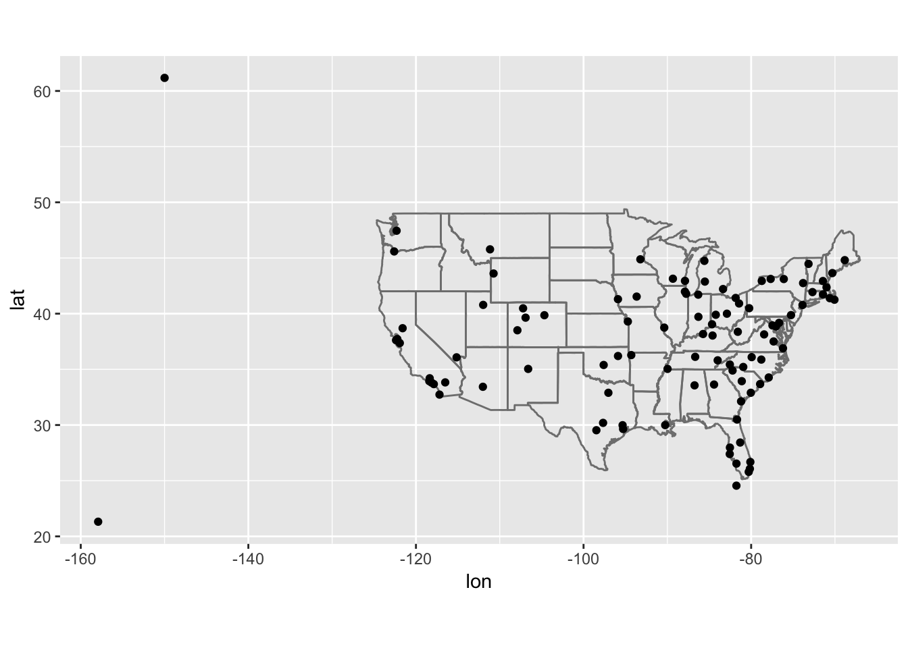
(Don’t worry if you don’t understand what semi_join() does — you’ll learn about it next.) You might want to use the size or colour of the points to display the average delay for each airport.
I first grouped by destination and computed the average delay per destination, and then joined the airports data to this metric using left_join(). Then, we can use this table to create a plot displaying the relative average delays at airports across the US by modifying the code provided by the book above.
# caluclate average delay by destination and join airports data
avg_delay_byDest <- flights %>%
group_by(dest) %>%
summarize ( avg_delay = mean(arr_delay, na.rm=T) ) %>%
left_join(airports, by = c("dest" = "faa"))
avg_delay_byDest## # A tibble: 105 x 9
## dest avg_delay name lat lon alt tz dst tzone
## <chr> <dbl> <chr> <dbl> <dbl> <int> <dbl> <chr> <chr>
## 1 ABQ 4.38 Albuquerque In… 35.0 -107. 5355 -7 A America/…
## 2 ACK 4.85 Nantucket Mem 41.3 -70.1 48 -5 A America/…
## 3 ALB 14.4 Albany Intl 42.7 -73.8 285 -5 A America/…
## 4 ANC -2.5 Ted Stevens An… 61.2 -150. 152 -9 A America/…
## 5 ATL 11.3 Hartsfield Jac… 33.6 -84.4 1026 -5 A America/…
## 6 AUS 6.02 Austin Bergstr… 30.2 -97.7 542 -6 A America/…
## 7 AVL 8.00 Asheville Regi… 35.4 -82.5 2165 -5 A America/…
## 8 BDL 7.05 Bradley Intl 41.9 -72.7 173 -5 A America/…
## 9 BGR 8.03 Bangor Intl 44.8 -68.8 192 -5 A America/…
## 10 BHM 16.9 Birmingham Intl 33.6 -86.8 644 -6 A America/…
## # … with 95 more rows# plot the results on top of the map of the US
avg_delay_byDest %>%
ggplot(aes(lon, lat)) +
borders("state") +
geom_point(aes(size = avg_delay, alpha = 1/5, color = avg_delay)) +
coord_quickmap()## Warning: Removed 5 rows containing missing values (geom_point).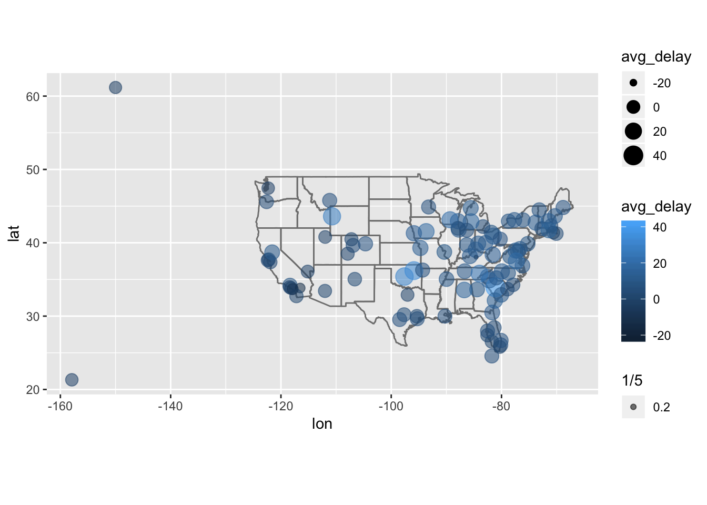
2. Add the location of the origin and destination (i.e. the lat and lon) to flights.
To do this, I first make a smaller table from airports containing just the variables that we need: faa, lat, and lon. Then, I join this table to flights using origin to add the lat + lon values for origin. I join again using dest this time, to add the lat + lon values for dest. In order to label the lat and lon values according to origin or dest airport, I specify suffix = c(".origin", ".dest").
lat_lon_airports <- airports %>%
select(faa, lat, lon)
with_origin <- left_join(flights, lat_lon_airports, by = c("origin" = "faa"))
with_origin## # A tibble: 336,776 x 21
## year month day dep_time sched_dep_time dep_delay arr_time
## <int> <int> <int> <int> <int> <dbl> <int>
## 1 2013 1 1 517 515 2 830
## 2 2013 1 1 533 529 4 850
## 3 2013 1 1 542 540 2 923
## 4 2013 1 1 544 545 -1 1004
## 5 2013 1 1 554 600 -6 812
## 6 2013 1 1 554 558 -4 740
## 7 2013 1 1 555 600 -5 913
## 8 2013 1 1 557 600 -3 709
## 9 2013 1 1 557 600 -3 838
## 10 2013 1 1 558 600 -2 753
## # … with 336,766 more rows, and 14 more variables: sched_arr_time <int>,
## # arr_delay <dbl>, carrier <chr>, flight <int>, tailnum <chr>,
## # origin <chr>, dest <chr>, air_time <dbl>, distance <dbl>, hour <dbl>,
## # minute <dbl>, time_hour <dttm>, lat <dbl>, lon <dbl>with_origin_and_dest <- left_join(with_origin, lat_lon_airports, by = c("dest" = "faa"), suffix = c(".origin", ".dest"))
with_origin_and_dest## # A tibble: 336,776 x 23
## year month day dep_time sched_dep_time dep_delay arr_time
## <int> <int> <int> <int> <int> <dbl> <int>
## 1 2013 1 1 517 515 2 830
## 2 2013 1 1 533 529 4 850
## 3 2013 1 1 542 540 2 923
## 4 2013 1 1 544 545 -1 1004
## 5 2013 1 1 554 600 -6 812
## 6 2013 1 1 554 558 -4 740
## 7 2013 1 1 555 600 -5 913
## 8 2013 1 1 557 600 -3 709
## 9 2013 1 1 557 600 -3 838
## 10 2013 1 1 558 600 -2 753
## # … with 336,766 more rows, and 16 more variables: sched_arr_time <int>,
## # arr_delay <dbl>, carrier <chr>, flight <int>, tailnum <chr>,
## # origin <chr>, dest <chr>, air_time <dbl>, distance <dbl>, hour <dbl>,
## # minute <dbl>, time_hour <dttm>, lat.origin <dbl>, lon.origin <dbl>,
## # lat.dest <dbl>, lon.dest <dbl>3. Is there a relationship between the age of a plane and its delays?
First group by tailnum, then calculate avg delays for arr_delay and dep_delay, then join the info from planes. Then we can visualize any relationships between the year variable (age) of the plane and the delays associated with it.
# first group by tailnum, calculate avg delays, then join with planes data
avg_delay_plane <- flights %>%
group_by(tailnum) %>%
summarize(
avg_delay_dep = mean (dep_delay, na.rm = T),
avg_delay_arr = mean (arr_delay, na.rm = T)
) %>%
left_join(planes, by = "tailnum")
avg_delay_plane## # A tibble: 4,044 x 11
## tailnum avg_delay_dep avg_delay_arr year type manufacturer model
## <chr> <dbl> <dbl> <int> <chr> <chr> <chr>
## 1 D942DN 31.5 31.5 NA <NA> <NA> <NA>
## 2 N0EGMQ 8.49 9.98 NA <NA> <NA> <NA>
## 3 N10156 17.8 12.7 2004 Fixe… EMBRAER EMB-…
## 4 N102UW 8 2.94 1998 Fixe… AIRBUS INDU… A320…
## 5 N103US -3.20 -6.93 1999 Fixe… AIRBUS INDU… A320…
## 6 N104UW 9.94 1.80 1999 Fixe… AIRBUS INDU… A320…
## 7 N10575 22.7 20.7 2002 Fixe… EMBRAER EMB-…
## 8 N105UW 2.58 -0.267 1999 Fixe… AIRBUS INDU… A320…
## 9 N107US -0.463 -5.73 1999 Fixe… AIRBUS INDU… A320…
## 10 N108UW 4.22 -1.25 1999 Fixe… AIRBUS INDU… A320…
## # … with 4,034 more rows, and 4 more variables: engines <int>,
## # seats <int>, speed <int>, engine <chr># vizualize dep_delay vs year of plane
avg_delay_plane %>%
ggplot( aes ( year, avg_delay_dep )) +
geom_point() +
geom_smooth()## `geom_smooth()` using method = 'gam' and formula 'y ~ s(x, bs = "cs")'## Warning: Removed 798 rows containing non-finite values (stat_smooth).## Warning: Removed 798 rows containing missing values (geom_point).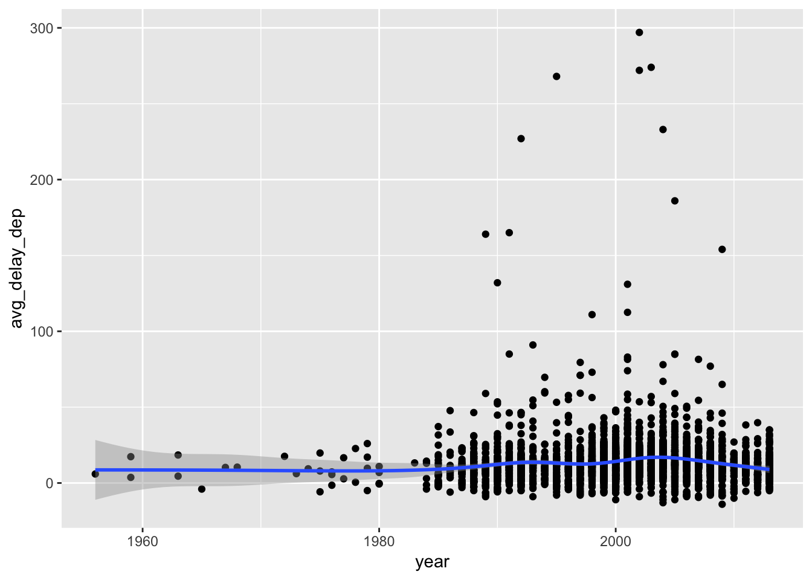
# vizualize arr_delay vs year of plane
avg_delay_plane %>%
ggplot( aes ( year, avg_delay_arr )) +
geom_point() +
geom_smooth()## `geom_smooth()` using method = 'gam' and formula 'y ~ s(x, bs = "cs")'## Warning: Removed 798 rows containing non-finite values (stat_smooth).
## Warning: Removed 798 rows containing missing values (geom_point).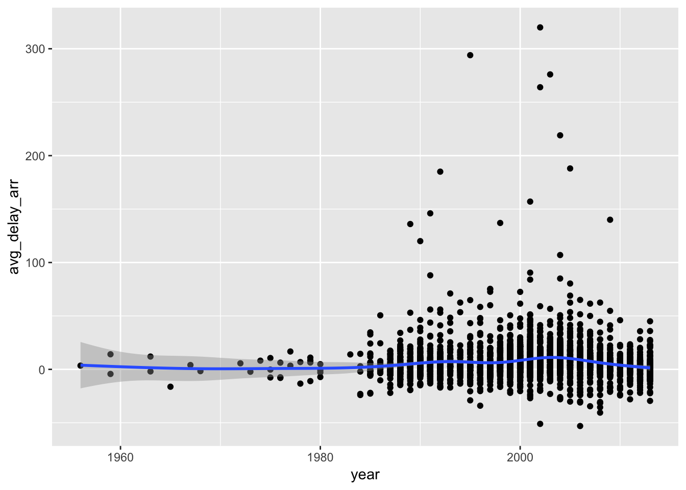
4. What weather conditions make it more likely to see a delay?
Join the weather table with flights, and then we can visualize the relationship with delay and weather conditions. One way to do so is with a correlogram, which shows the correlation between each of the variables in a matrix. After joining weather with flights, we can remove the time variables (year, month, day, hour, etc) and use as.matrix() to turn the tibble into a matrix. Then, we can use the ggcorrplot package to plot a nice looking correllogram. From this plot, we can observe that variable in weather with the highest positive correlation with dep_delay is precip, at roughly 0.05. While this is a very small number (between 0-1), over a large number of observations it is still meaningful. This also makes sense since high precipitation values often make visibility an issue, which may lead to delayed flights.
It might make more sense to group dep_delay by day, and then look at the correlations in the manner I have done so below. I will revisit this in the 13.5.1 exercise 4, in which I find that lower visibility, higher humidity, and lower pressure on average correlate with higher cumulative delays.
# install.packages("ggcorrplot")
library(ggcorrplot)
# join weather table with flights, using natural join (no "by" argument specified)
weatherdelays <- flights %>%
select(year, month, day, hour, time_hour, origin, dep_delay) %>%
left_join(weather)%>%
select(-year,-month,-day,-hour,-time_hour,-origin)## Joining, by = c("year", "month", "day", "hour", "time_hour", "origin")weatherdelays## # A tibble: 336,776 x 10
## dep_delay temp dewp humid wind_dir wind_speed wind_gust precip
## <dbl> <dbl> <dbl> <dbl> <dbl> <dbl> <dbl> <dbl>
## 1 2 39.0 28.0 64.4 260 12.7 NA 0
## 2 4 39.9 25.0 54.8 250 15.0 21.9 0
## 3 2 39.0 27.0 61.6 260 15.0 NA 0
## 4 -1 39.0 27.0 61.6 260 15.0 NA 0
## 5 -6 39.9 25.0 54.8 260 16.1 23.0 0
## 6 -4 39.0 28.0 64.4 260 12.7 NA 0
## 7 -5 37.9 28.0 67.2 240 11.5 NA 0
## 8 -3 39.9 25.0 54.8 260 16.1 23.0 0
## 9 -3 37.9 27.0 64.3 260 13.8 NA 0
## 10 -2 39.9 25.0 54.8 260 16.1 23.0 0
## # … with 336,766 more rows, and 2 more variables: pressure <dbl>,
## # visib <dbl>rm_na_weatherdelays <- as.matrix (na.omit(weatherdelays))
head(rm_na_weatherdelays)## dep_delay temp dewp humid wind_dir wind_speed wind_gust precip
## [1,] 4 39.92 24.98 54.81 250 14.96014 21.86482 0
## [2,] -6 39.92 24.98 54.81 260 16.11092 23.01560 0
## [3,] -3 39.92 24.98 54.81 260 16.11092 23.01560 0
## [4,] -2 39.92 24.98 54.81 260 16.11092 23.01560 0
## [5,] -1 39.92 24.98 54.81 260 16.11092 23.01560 0
## [6,] 0 39.92 24.98 54.81 260 16.11092 23.01560 0
## pressure visib
## [1,] 1011.4 10
## [2,] 1011.7 10
## [3,] 1011.7 10
## [4,] 1011.7 10
## [5,] 1011.7 10
## [6,] 1011.7 10corr_weather <- cor(rm_na_weatherdelays)
ggcorrplot(corr_weather, hc.order = TRUE,
type = "lower",
lab = TRUE,
lab_size = 3,
method="circle",
colors = c("steelblue", "white", "orangered3"),
title="Correlogram",
ggtheme=theme_bw)
weatherdelays %>%
ggplot( aes (x = precip, y = dep_delay))+
geom_point()+
geom_smooth(se = F)## `geom_smooth()` using method = 'gam' and formula 'y ~ s(x, bs = "cs")'## Warning: Removed 9783 rows containing non-finite values (stat_smooth).## Warning: Removed 9783 rows containing missing values (geom_point).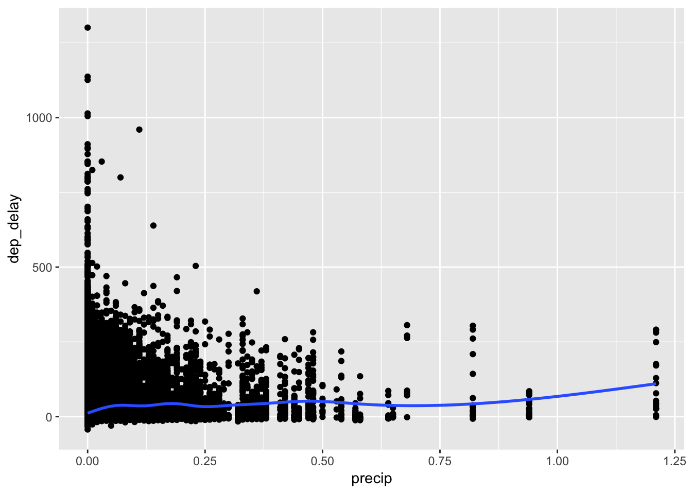
weatherdelays %>%
ggplot( aes (x = humid, y = dep_delay))+
geom_point()+
geom_smooth(se = F)## `geom_smooth()` using method = 'gam' and formula 'y ~ s(x, bs = "cs")'## Warning: Removed 9800 rows containing non-finite values (stat_smooth).## Warning: Removed 9800 rows containing missing values (geom_point).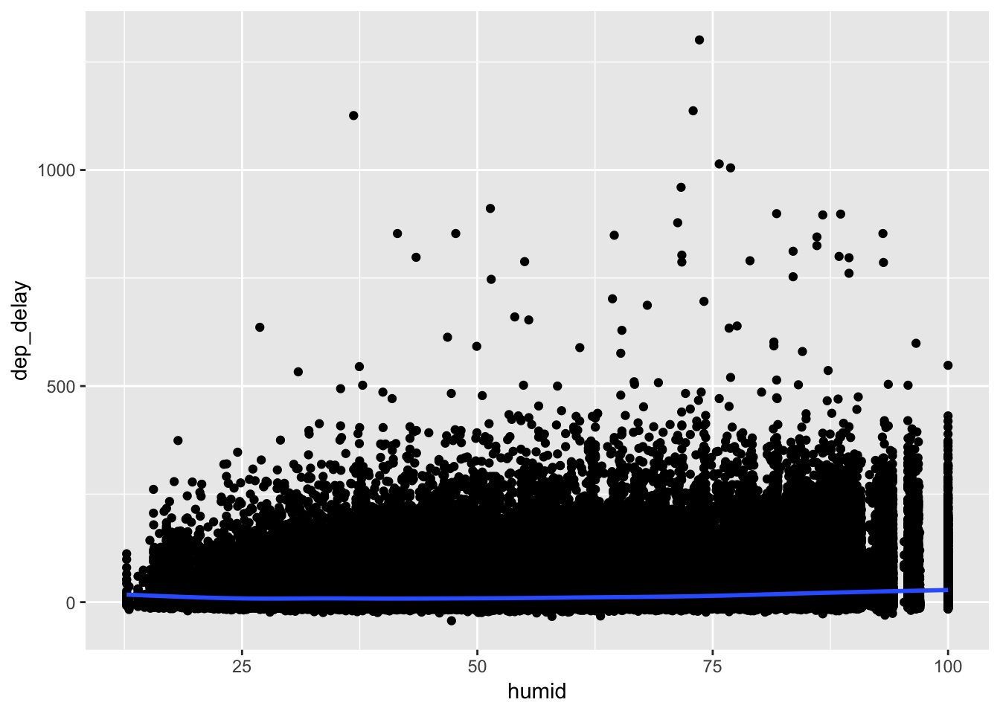
5. What happened on June 13 2013? Display the spatial pattern of delays, and then use Google to cross-reference with the weather.
First filter flights for observations from June 13, 2013 using filter(). We can see that there were only flights comming out of EWR, JFK, and LGA on this day! Furthermore, all the flights were considerably delayed (high dep_delay value). I initially found this by overlaying the average dep_delay for the filtered data table onto the map of the US, and was surprised that there were so few origin airports on the map. Looking at the opposite, grouping by destination and looking at arr_delay values, we can see that there are many, many more airports in the destination variable. Most flights flew out of only a few airports (EWR, JFK, and LGA) but arrived at many different destinations, and these arrivals were delayed as well.
flights %>%
filter (year == 2013, month == 6, day == 13) %>%
group_by(origin) %>%
summarize ( avg_delay = mean(dep_delay, na.rm=T) )## # A tibble: 3 x 2
## origin avg_delay
## <chr> <dbl>
## 1 EWR 45.6
## 2 JFK 43.7
## 3 LGA 48.4avg_delay_byorigin <- flights %>%
filter (year == 2013, month == 6, day == 13) %>%
group_by(origin) %>%
summarize ( avg_delay = mean(dep_delay, na.rm=T) ) %>%
left_join(airports, by = c("origin" = "faa"))
avg_delay_byorigin## # A tibble: 3 x 9
## origin avg_delay name lat lon alt tz dst tzone
## <chr> <dbl> <chr> <dbl> <dbl> <int> <dbl> <chr> <chr>
## 1 EWR 45.6 Newark Libert… 40.7 -74.2 18 -5 A America/Ne…
## 2 JFK 43.7 John F Kenned… 40.6 -73.8 13 -5 A America/Ne…
## 3 LGA 48.4 La Guardia 40.8 -73.9 22 -5 A America/Ne…# plot the results on top of the map of the US
avg_delay_byorigin %>%
ggplot(aes(lon, lat)) +
borders("state") +
geom_point(aes(size = avg_delay, alpha = 1/5, color = avg_delay)) +
coord_quickmap()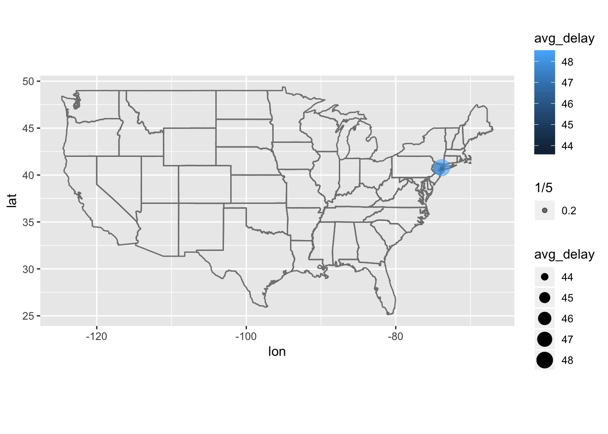
avg_delay_byDest <- flights %>%
filter (year == 2013, month == 6, day == 13) %>%
group_by(dest) %>%
summarize ( avg_delay = mean(arr_delay, na.rm=T) ) %>%
left_join(airports, by = c("dest" = "faa"))
avg_delay_byDest## # A tibble: 89 x 9
## dest avg_delay name lat lon alt tz dst tzone
## <chr> <dbl> <chr> <dbl> <dbl> <int> <dbl> <chr> <chr>
## 1 ABQ 64 Albuquerque Int… 35.0 -107. 5355 -7 A America…
## 2 ACK 8 Nantucket Mem 41.3 -70.1 48 -5 A America…
## 3 ALB -19 Albany Intl 42.7 -73.8 285 -5 A America…
## 4 ATL 109. Hartsfield Jack… 33.6 -84.4 1026 -5 A America…
## 5 AUS 64.3 Austin Bergstro… 30.2 -97.7 542 -6 A America…
## 6 AVL 90 Asheville Regio… 35.4 -82.5 2165 -5 A America…
## 7 BDL 18.5 Bradley Intl 41.9 -72.7 173 -5 A America…
## 8 BGR 102 Bangor Intl 44.8 -68.8 192 -5 A America…
## 9 BHM 158 Birmingham Intl 33.6 -86.8 644 -6 A America…
## 10 BNA 95.9 Nashville Intl 36.1 -86.7 599 -6 A America…
## # … with 79 more rows# plot the results on top of the map of the US
avg_delay_byDest %>%
ggplot(aes(lon, lat)) +
borders("state") +
geom_point(aes(size = avg_delay, alpha = 1/5, color = avg_delay)) +
coord_quickmap()## Warning: Removed 7 rows containing missing values (geom_point).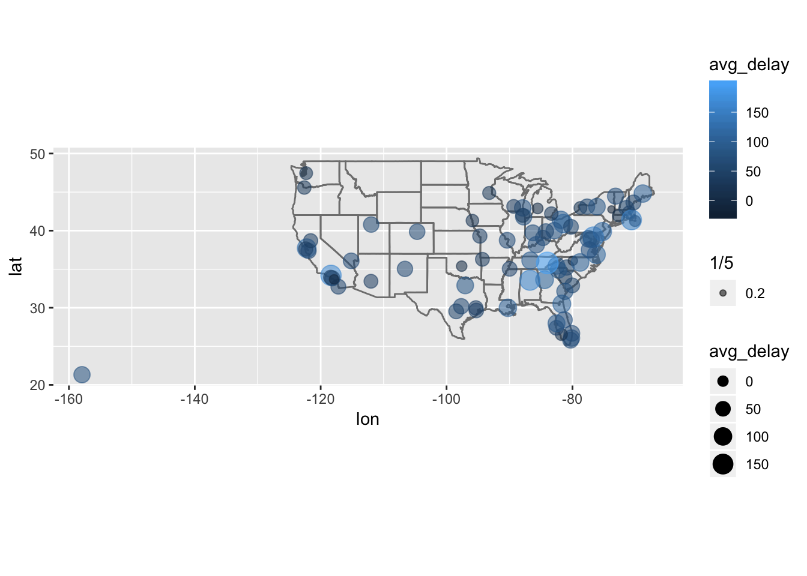
13.5 Notes - Filtering Joins
There are two types of filtering joins that can be performed, listed by the book:
- “semi_join(x, y) keeps all observations in x that have a match in y.”
- “anti_join(x, y) drops all observations in x that have a match in y.”
The semi_join() function is useful when you want to filter a table for observations that match a certain criteria set by a second table. The provided example in the book is finding top destinations, then looking for the observations in the orginal data table that corresponded to the top destinations. You could use filter() but this might become difficult when analzying multiple variables.
# find top destinations
top_dest <- flights %>%
count(dest, sort = TRUE) %>%
head(10)
top_dest## # A tibble: 10 x 2
## dest n
## <chr> <int>
## 1 ORD 17283
## 2 ATL 17215
## 3 LAX 16174
## 4 BOS 15508
## 5 MCO 14082
## 6 CLT 14064
## 7 SFO 13331
## 8 FLL 12055
## 9 MIA 11728
## 10 DCA 9705# use filter() to find observations in flights that have matched key in top destinations table
flights %>%
filter(dest %in% top_dest$dest)## # A tibble: 141,145 x 19
## year month day dep_time sched_dep_time dep_delay arr_time
## <int> <int> <int> <int> <int> <dbl> <int>
## 1 2013 1 1 542 540 2 923
## 2 2013 1 1 554 600 -6 812
## 3 2013 1 1 554 558 -4 740
## 4 2013 1 1 555 600 -5 913
## 5 2013 1 1 557 600 -3 838
## 6 2013 1 1 558 600 -2 753
## 7 2013 1 1 558 600 -2 924
## 8 2013 1 1 558 600 -2 923
## 9 2013 1 1 559 559 0 702
## 10 2013 1 1 600 600 0 851
## # … with 141,135 more rows, and 12 more variables: sched_arr_time <int>,
## # arr_delay <dbl>, carrier <chr>, flight <int>, tailnum <chr>,
## # origin <chr>, dest <chr>, air_time <dbl>, distance <dbl>, hour <dbl>,
## # minute <dbl>, time_hour <dttm># use semi_join() to find obseravtions in flights that have matched key in top destinations table
flights %>%
semi_join(top_dest)## Joining, by = "dest"## # A tibble: 141,145 x 19
## year month day dep_time sched_dep_time dep_delay arr_time
## <int> <int> <int> <int> <int> <dbl> <int>
## 1 2013 1 1 542 540 2 923
## 2 2013 1 1 554 600 -6 812
## 3 2013 1 1 554 558 -4 740
## 4 2013 1 1 555 600 -5 913
## 5 2013 1 1 557 600 -3 838
## 6 2013 1 1 558 600 -2 753
## 7 2013 1 1 558 600 -2 924
## 8 2013 1 1 558 600 -2 923
## 9 2013 1 1 559 559 0 702
## 10 2013 1 1 600 600 0 851
## # … with 141,135 more rows, and 12 more variables: sched_arr_time <int>,
## # arr_delay <dbl>, carrier <chr>, flight <int>, tailnum <chr>,
## # origin <chr>, dest <chr>, air_time <dbl>, distance <dbl>, hour <dbl>,
## # minute <dbl>, time_hour <dttm>The opposite of the semi_join() function is the anti_join() function, which will return mismatches between the two tables (which values in x do not have a matched key in y?). The book uses anti_join() to find which flights do not have a match in the planes data table.
# anti join to find which observations in flights do not have a match in the planes table
flights %>%
anti_join(planes, by = "tailnum") %>%
count(tailnum, sort = TRUE)## # A tibble: 722 x 2
## tailnum n
## <chr> <int>
## 1 <NA> 2512
## 2 N725MQ 575
## 3 N722MQ 513
## 4 N723MQ 507
## 5 N713MQ 483
## 6 N735MQ 396
## 7 N0EGMQ 371
## 8 N534MQ 364
## 9 N542MQ 363
## 10 N531MQ 349
## # … with 712 more rows13.5.1 Exercises
1. What does it mean for a flight to have a missing tailnum? What do the tail numbers that don’t have a matching record in planes have in common? (Hint: one variable explains ~90% of the problems.)
The flights that have a missing tailnum can be found by filtering the flights table using filter(is.na(tailnum)). We can observe that these entries also have missing values for dep_time, suggesting that these flights were cancelled. If we remove all flights that have a missing dep_time, we observe that the flights with missing tailnum are also removed as well.
To find the tail numbers that don’t have a matching record in planes, we can use the anti_join() function. Then, we can examine the columns of the resulting table to see if any particular variables are enriched. We observe that some carriers are particularly enriched in the flights that have tailnums that are not recorded in the planes table, including MQ and AA.
# find flights that have a missing tailnum
flights %>%
filter(is.na(tailnum))## # A tibble: 2,512 x 19
## year month day dep_time sched_dep_time dep_delay arr_time
## <int> <int> <int> <int> <int> <dbl> <int>
## 1 2013 1 2 NA 1545 NA NA
## 2 2013 1 2 NA 1601 NA NA
## 3 2013 1 3 NA 857 NA NA
## 4 2013 1 3 NA 645 NA NA
## 5 2013 1 4 NA 845 NA NA
## 6 2013 1 4 NA 1830 NA NA
## 7 2013 1 5 NA 840 NA NA
## 8 2013 1 7 NA 820 NA NA
## 9 2013 1 8 NA 1645 NA NA
## 10 2013 1 9 NA 755 NA NA
## # … with 2,502 more rows, and 12 more variables: sched_arr_time <int>,
## # arr_delay <dbl>, carrier <chr>, flight <int>, tailnum <chr>,
## # origin <chr>, dest <chr>, air_time <dbl>, distance <dbl>, hour <dbl>,
## # minute <dbl>, time_hour <dttm># remove flights with missing dep_time and look at whether missing tailnums still exist
not_cancelled <- flights %>%
filter(!is.na(dep_time))
not_cancelled %>%
filter(is.na(tailnum))## # A tibble: 0 x 19
## # … with 19 variables: year <int>, month <int>, day <int>, dep_time <int>,
## # sched_dep_time <int>, dep_delay <dbl>, arr_time <int>,
## # sched_arr_time <int>, arr_delay <dbl>, carrier <chr>, flight <int>,
## # tailnum <chr>, origin <chr>, dest <chr>, air_time <dbl>,
## # distance <dbl>, hour <dbl>, minute <dbl>, time_hour <dttm># anti join to find which observations in flights do not have a match in the planes table
flights %>%
anti_join(planes, by = "tailnum") %>%
count(tailnum, sort = T)## # A tibble: 722 x 2
## tailnum n
## <chr> <int>
## 1 <NA> 2512
## 2 N725MQ 575
## 3 N722MQ 513
## 4 N723MQ 507
## 5 N713MQ 483
## 6 N735MQ 396
## 7 N0EGMQ 371
## 8 N534MQ 364
## 9 N542MQ 363
## 10 N531MQ 349
## # … with 712 more rows# observe that some carriers are enriched
flights %>%
anti_join(planes, by = "tailnum") %>%
count(carrier, sort = T) %>%
ggplot (aes (x = carrier, y = n))+
geom_bar( stat = "identity", aes(fill = carrier))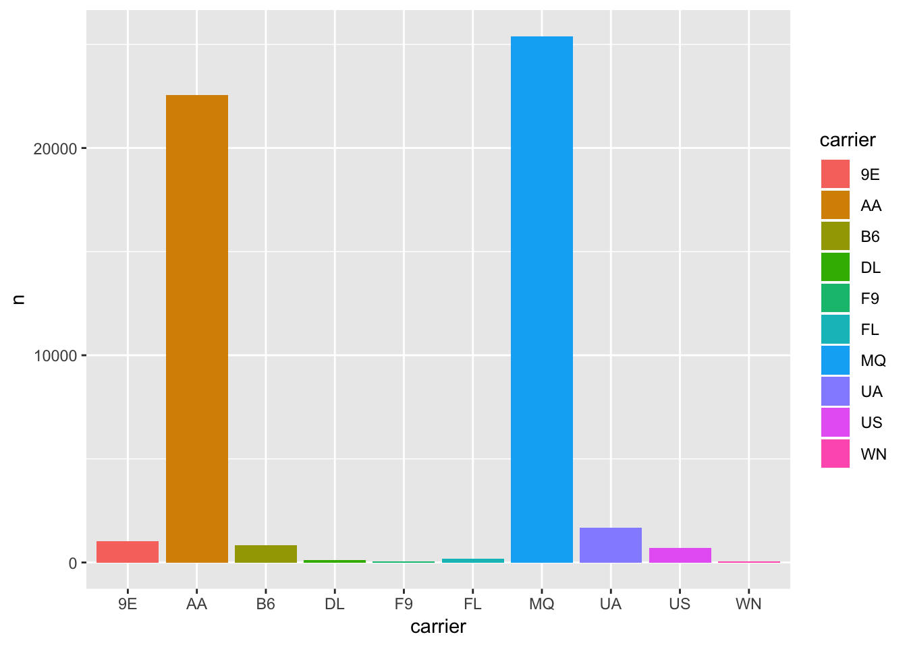
2. Filter flights to only show flights with planes that have flown at least 100 flights.
We can do this by using the semi_join() function. First, we have to identify which tailnums (planes) have flown at least 100 flights, using count() and filter(). We can store this output in a separate table which I call flights_100, then use semi_join() to keep only the observations in flights that also have an entry in flights_100.
# make a separate table containing tailnums that have over 100 flights
flights_100 <- flights %>%
count(tailnum) %>%
filter(n>100)
# use semi join to keep only tailnums in flights that exist in our flights_100 table
flights %>%
semi_join (flights_100)## Joining, by = "tailnum"## # A tibble: 229,202 x 19
## year month day dep_time sched_dep_time dep_delay arr_time
## <int> <int> <int> <int> <int> <dbl> <int>
## 1 2013 1 1 517 515 2 830
## 2 2013 1 1 533 529 4 850
## 3 2013 1 1 544 545 -1 1004
## 4 2013 1 1 554 558 -4 740
## 5 2013 1 1 555 600 -5 913
## 6 2013 1 1 557 600 -3 709
## 7 2013 1 1 557 600 -3 838
## 8 2013 1 1 558 600 -2 849
## 9 2013 1 1 558 600 -2 853
## 10 2013 1 1 558 600 -2 923
## # … with 229,192 more rows, and 12 more variables: sched_arr_time <int>,
## # arr_delay <dbl>, carrier <chr>, flight <int>, tailnum <chr>,
## # origin <chr>, dest <chr>, air_time <dbl>, distance <dbl>, hour <dbl>,
## # minute <dbl>, time_hour <dttm>3. Combine fueleconomy::vehicles and fueleconomy::common to find only the records for the most common models.
We can use the semi_join() function to combine vehicles and common, which will keep only the records in vehicles that also have a match in the common table.
library(fueleconomy)
semi_join(vehicles,common)## Joining, by = c("make", "model")## # A tibble: 14,531 x 12
## id make model year class trans drive cyl displ fuel hwy cty
## <int> <chr> <chr> <int> <chr> <chr> <chr> <int> <dbl> <chr> <int> <int>
## 1 1833 Acura Integ… 1986 Subc… Auto… Fron… 4 1.6 Regu… 28 22
## 2 1834 Acura Integ… 1986 Subc… Manu… Fron… 4 1.6 Regu… 28 23
## 3 3037 Acura Integ… 1987 Subc… Auto… Fron… 4 1.6 Regu… 28 22
## 4 3038 Acura Integ… 1987 Subc… Manu… Fron… 4 1.6 Regu… 28 23
## 5 4183 Acura Integ… 1988 Subc… Auto… Fron… 4 1.6 Regu… 27 22
## 6 4184 Acura Integ… 1988 Subc… Manu… Fron… 4 1.6 Regu… 28 23
## 7 5303 Acura Integ… 1989 Subc… Auto… Fron… 4 1.6 Regu… 27 22
## 8 5304 Acura Integ… 1989 Subc… Manu… Fron… 4 1.6 Regu… 28 23
## 9 6442 Acura Integ… 1990 Subc… Auto… Fron… 4 1.8 Regu… 24 20
## 10 6443 Acura Integ… 1990 Subc… Manu… Fron… 4 1.8 Regu… 26 21
## # … with 14,521 more rows4. Find the 48 hours (over the course of the whole year) that have the worst delays. Cross-reference it with the weather data. Can you see any patterns?
To find the 48 hours that have the worst delays, we can use group_by() and summarize() to find the total delay per day, then combine the total delay per day with lag() to get the total delay per 48 hours. There will be a missing value for the first day of the year, since the method that I use will sum the total delay for the current day with the previous day. Sorting this table will identify the days with the worst dep_delay over 48 hours, which turns out to be March 7-8th, 2013, with a total delay of 84713 min. We can left_join() the weather conditions to this table, and then analyze the weather patterns for this day in particular. We can see that on average, higher 48hr delays are associated with higher humidity values, higher temp/dewpoint, lower pressure, and lower visibility, based on both the correlogram and scatterplots.
# identify the 48 hrs with highest combined dep_delay, then join weather conditions
most_delayed_48 <- flights %>%
group_by(year, month, day) %>%
summarize ( delay_per_day = sum( dep_delay, na.rm=T))%>%
mutate ( delay_48hr = delay_per_day + lag(delay_per_day)) %>%
arrange(desc(delay_48hr)) %>%
left_join(weather, by = c("year", "month", "day"))
most_delayed_48## # A tibble: 26,116 x 17
## # Groups: year, month [?]
## year month day delay_per_day delay_48hr origin hour temp dewp
## <dbl> <dbl> <int> <dbl> <dbl> <chr> <int> <dbl> <dbl>
## 1 2013 3 8 66746 84713 EWR 0 33.8 32
## 2 2013 3 8 66746 84713 EWR 1 33.1 32
## 3 2013 3 8 66746 84713 EWR 2 33.1 30.9
## 4 2013 3 8 66746 84713 EWR 3 33.1 30.9
## 5 2013 3 8 66746 84713 EWR 4 33.8 30.9
## 6 2013 3 8 66746 84713 EWR 5 32 30.9
## 7 2013 3 8 66746 84713 EWR 6 32 30.0
## 8 2013 3 8 66746 84713 EWR 7 32 30.0
## 9 2013 3 8 66746 84713 EWR 8 32 30.2
## 10 2013 3 8 66746 84713 EWR 9 32 30.2
## # … with 26,106 more rows, and 8 more variables: humid <dbl>,
## # wind_dir <dbl>, wind_speed <dbl>, wind_gust <dbl>, precip <dbl>,
## # pressure <dbl>, visib <dbl>, time_hour <dttm># visualize correlations of variables with delay_48hr
most_delayed_48 %>%
ggplot( aes (x = delay_48hr, y = humid))+
geom_point(aes (size = precip))+
geom_smooth(method = "lm", se = F)## Warning: Removed 857 rows containing non-finite values (stat_smooth).## Warning: Removed 857 rows containing missing values (geom_point).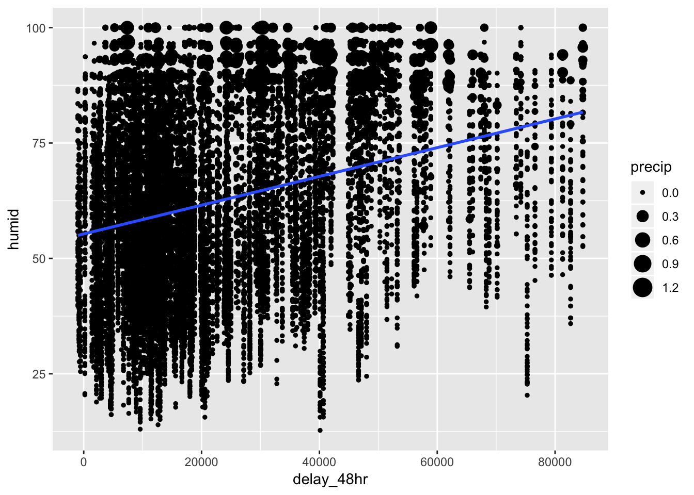
most_delayed_48 %>%
ggplot( aes (x = delay_48hr, y = visib))+
geom_point()+
geom_smooth(method = "lm", se = F)## Warning: Removed 856 rows containing non-finite values (stat_smooth).## Warning: Removed 856 rows containing missing values (geom_point).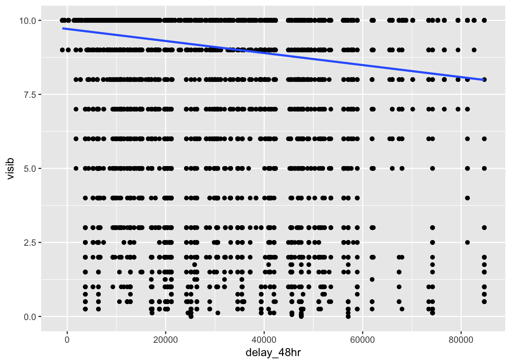
most_delayed_48 %>%
ggplot( aes (x = delay_48hr, y = pressure))+
geom_point()+
geom_smooth(method = "lm", se = F)## Warning: Removed 3477 rows containing non-finite values (stat_smooth).## Warning: Removed 3477 rows containing missing values (geom_point).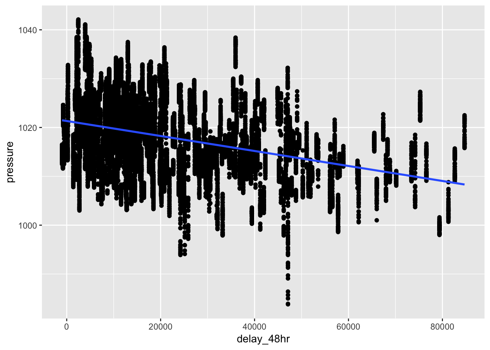
# plot a correlogram to observe how delay_48hr is associated with other weather variables
library(ggcorrplot)
weatherdelays <- most_delayed_48 %>%
select(-day,-hour,-delay_per_day,-origin, -time_hour)
rm_na_weatherdelays <- as.matrix (na.omit(weatherdelays)[,-c(1:2)])
corr_weather <- cor(rm_na_weatherdelays)
ggcorrplot(corr_weather, hc.order = TRUE,
type = "lower",
lab = TRUE,
lab_size = 3,
method="circle",
colors = c("steelblue", "white", "orangered3"),
title="Correlogram",
ggtheme=theme_bw)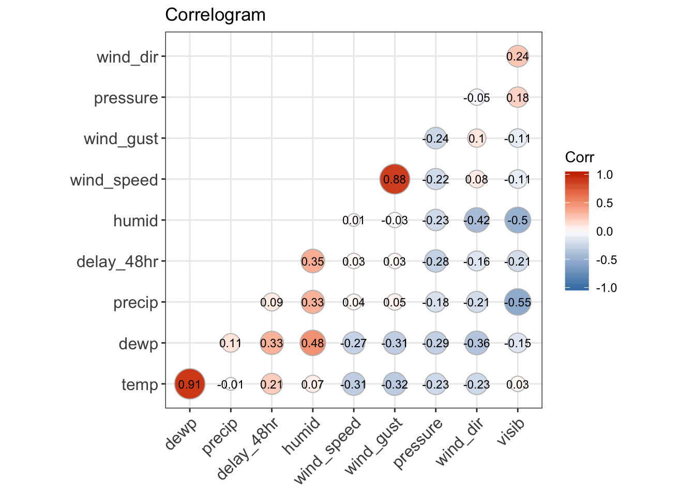
5. What does anti_join(flights, airports, by = c(“dest” = “faa”)) tell you? What does anti_join(airports, flights, by = c(“faa” = “dest”)) tell you?
anti_join(flights, airports, by = c("dest" = "faa")) tells you which observations in flights do not have a destination that is listed in the ‘faa’ variable of the airports table.
anti_join(airports, flights, by = c("faa" = "dest")) tells you which observations in airports do not have a ‘faa’ value that is present in the ‘dest’ variable of the flights table.
anti_join(flights, airports, by = c("dest" = "faa"))## # A tibble: 7,602 x 19
## year month day dep_time sched_dep_time dep_delay arr_time
## <int> <int> <int> <int> <int> <dbl> <int>
## 1 2013 1 1 544 545 -1 1004
## 2 2013 1 1 615 615 0 1039
## 3 2013 1 1 628 630 -2 1137
## 4 2013 1 1 701 700 1 1123
## 5 2013 1 1 711 715 -4 1151
## 6 2013 1 1 820 820 0 1254
## 7 2013 1 1 820 820 0 1249
## 8 2013 1 1 840 845 -5 1311
## 9 2013 1 1 909 810 59 1331
## 10 2013 1 1 913 918 -5 1346
## # … with 7,592 more rows, and 12 more variables: sched_arr_time <int>,
## # arr_delay <dbl>, carrier <chr>, flight <int>, tailnum <chr>,
## # origin <chr>, dest <chr>, air_time <dbl>, distance <dbl>, hour <dbl>,
## # minute <dbl>, time_hour <dttm>anti_join(airports, flights, by = c("faa" = "dest"))## # A tibble: 1,357 x 8
## faa name lat lon alt tz dst tzone
## <chr> <chr> <dbl> <dbl> <int> <dbl> <chr> <chr>
## 1 04G Lansdowne Airport 41.1 -80.6 1044 -5 A America/New_…
## 2 06A Moton Field Municipa… 32.5 -85.7 264 -6 A America/Chic…
## 3 06C Schaumburg Regional 42.0 -88.1 801 -6 A America/Chic…
## 4 06N Randall Airport 41.4 -74.4 523 -5 A America/New_…
## 5 09J Jekyll Island Airport 31.1 -81.4 11 -5 A America/New_…
## 6 0A9 Elizabethton Municip… 36.4 -82.2 1593 -5 A America/New_…
## 7 0G6 Williams County Airp… 41.5 -84.5 730 -5 A America/New_…
## 8 0G7 Finger Lakes Regiona… 42.9 -76.8 492 -5 A America/New_…
## 9 0P2 Shoestring Aviation … 39.8 -76.6 1000 -5 U America/New_…
## 10 0S9 Jefferson County Intl 48.1 -123. 108 -8 A America/Los_…
## # … with 1,347 more rows6. You might expect that there’s an implicit relationship between plane and airline, because each plane is flown by a single airline. Confirm or reject this hypothesis using the tools you’ve learned above.
To explore whether each plane exclusively flies with a single airline, we can group the flights table by tailnum, then by carrier. Counting this grouped table will yield the number of flights each plane made with its carrier or carriers. We can group this table again by tailnum, then count how many carriers it flew with. If the hypothesis is true, then we would expect that there would be no entries with more than one carrier per plane. However, when we filter this table for planes with carriers > 1, we observe that 17 planes have flown with 2 carriers. Out of the roughly 4000 planes, this is only a very small fraction. This evidence supports our hypothesis that, in general, there is an association between plane and airline. Most of the time, planes only fly with a single carrier. However, a small amount of planes have flown with multiple airlines. This may have occured if an airline sold their planes to another airline.
# find the number of carriers that each plane has flown with
flights %>%
group_by (tailnum, carrier) %>%
count() %>%
group_by(tailnum)%>%
count() %>%
arrange(desc(nn)) %>%
filter(nn>1)## # A tibble: 18 x 2
## # Groups: tailnum [18]
## tailnum nn
## <chr> <int>
## 1 <NA> 7
## 2 N146PQ 2
## 3 N153PQ 2
## 4 N176PQ 2
## 5 N181PQ 2
## 6 N197PQ 2
## 7 N200PQ 2
## 8 N228PQ 2
## 9 N232PQ 2
## 10 N933AT 2
## 11 N935AT 2
## 12 N977AT 2
## 13 N978AT 2
## 14 N979AT 2
## 15 N981AT 2
## 16 N989AT 2
## 17 N990AT 2
## 18 N994AT 213.6 & 13.7 Notes - Join problems and set operations
The book recommends the following process for setting up your data to perform join operations.
- First, identify the variables that form the primary key in each table, usually thinking about the types of variables that would make sense to be keys (id, or a date/time, etc.).
- See if there are any missing values in the variable(s) for your primary key. Since values cannot be joined to missing values, this might result in issues.
- Make sure that all the values of the keys match between the tables you are joining. If a value for a key in one of the tables was missing due to a data entry error or other reason, the value will be lost in the subsequent join. Values that are not consistent between keys can be assessed using anti_join().
The last segment of the chapter focuses on set operations. Below are the functions listed by the book for performing set operations. They treat the observations (rows) of two tables that have the same variables as sets.
- intersect(x, y): return only observations in both x and y.
- union(x, y): return unique observations in x and y.
- setdiff(x, y): return observations in x, but not in y.
Here are the examples provided by the book for the set operations described above:
df1 <- tribble(
~x, ~y,
1, 1,
2, 1
)
df2 <- tribble(
~x, ~y,
1, 1,
1, 2
)intersect(df1, df2)## # A tibble: 1 x 2
## x y
## <dbl> <dbl>
## 1 1 1union(df1, df2)## # A tibble: 3 x 2
## x y
## <dbl> <dbl>
## 1 1 2
## 2 2 1
## 3 1 1setdiff(df1, df2)## # A tibble: 1 x 2
## x y
## <dbl> <dbl>
## 1 2 1setdiff(df2, df1)## # A tibble: 1 x 2
## x y
## <dbl> <dbl>
## 1 1 2